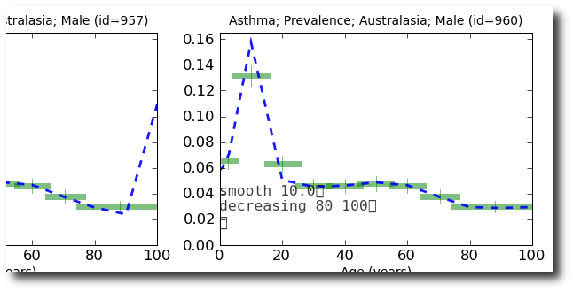
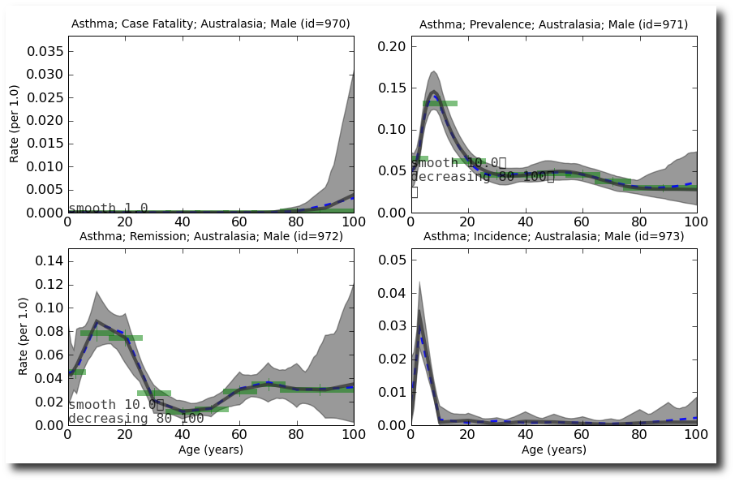

Quick-start Tutorials¶
Best-case scenario: Lots of consistient, low-noise data¶
This Data Table is unrealistically good data, but it provides a starting point for learning how to use DisMod.
Select all the rows and columns from the asthma data table, and copy it (Edit->Copy or cntl-c).
Paste this into Tab Separated Values field on the Data Upload Page.
Click ‘Create’ to load this data into DisMod.
Try fitting the prevalence data individually. For example, if the id number of the disease model is 1, then type this on the command line:
import dismod3 import gbd_disease_model as model dm = dismod3.get_disease_model(1) time model.fit(dm, 'map', 'prevalence data') time model.fit(dm, 'mcmc', 'prevalence data') dismod3.post_disease_model(dm)
This is pretty good, but it seems to have a strange behavior at the oldest ages:

To add prior beliefs that the incidence rate is a smooth function of age and is decreasing at older ages, click ‘clone’ next to 957. Then in the ‘Priors’ textbox, add the lines:
smooth 10.0 decreasing 80 100
Now, the results of fitting the new rate function (with scripts/fit_rf <new_rate_id>) incorporate these prior beliefs:
It might be a good idea to add similar priors to the remission rate.
To fit all the data together (and generate incidence and duration estimates as well), do the following (but replace the appropriate rate id numbers based on your situation):
scripts/fit_dm 959 960 961
To export the estimates for use in a spreadsheet or another program, direct your browser to the rate function with .csv instead of .html in the url.
Another example, with more, noiser, less consistent data¶
Now try the same thing with example data table, which is some synthetically generated data that is similar to the asthma data from the previous section.